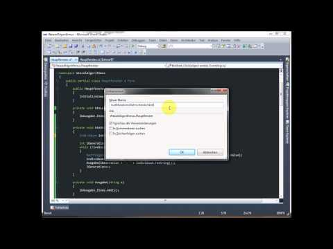

Der Weasel-Algorithmus ist ein genetischer Algorithmus, der durch Mutation und Selektion ein gewünschtes Ziel schrittweise annähert. In dem Video erstelle ich eine Anwendung, die das Prinzip des Algorithmus verdeutlicht.
Der Algorithmus funktioniert so:
- Denke dir eine zufällige Zeichenkette aus.
- Verändere zufällig einige Buchstaben darin und generiere dadurch neue Zeichenketten.
- Von diesen neuen Zeichenketten nehme ich die Zeichenkette, die am besten zu meinem Ziel passt - z.B. diejenige, in der am meisten Buchstaben schon am richtigen Platz sind.
- Mit dieser neuen Zeichenketten fahre ich wie bei Schritt 2 fort. Das passiert so lange, bis die gewünschte Zeichenkette entsteht.
Wir können und einen Haufen Affen vorstellen. Jeder Affe hat eine Schreibmaschine, auf die er einhämmert. Wenn wir nur lange genug warten, entstehen zufällig irgendwann die gesammelten Werke von Shakespeare. Das nennt man übrigens das Infinite-Monkey-Theorem.
Das Video zeigt ungeschnitten, wie ich den Algorithmus programmiert habe. Deshalb ist es mit 42 Minuten diesmal etwas länger geworden. Dafür sieht man aber auch jeden Fehler, den ich gemacht und jede Entscheidung, die ich während der Arbeit getroffen habe.
